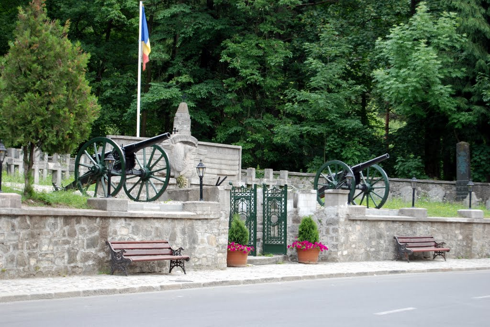
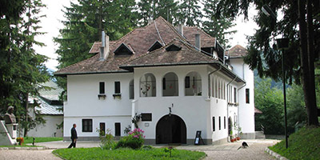
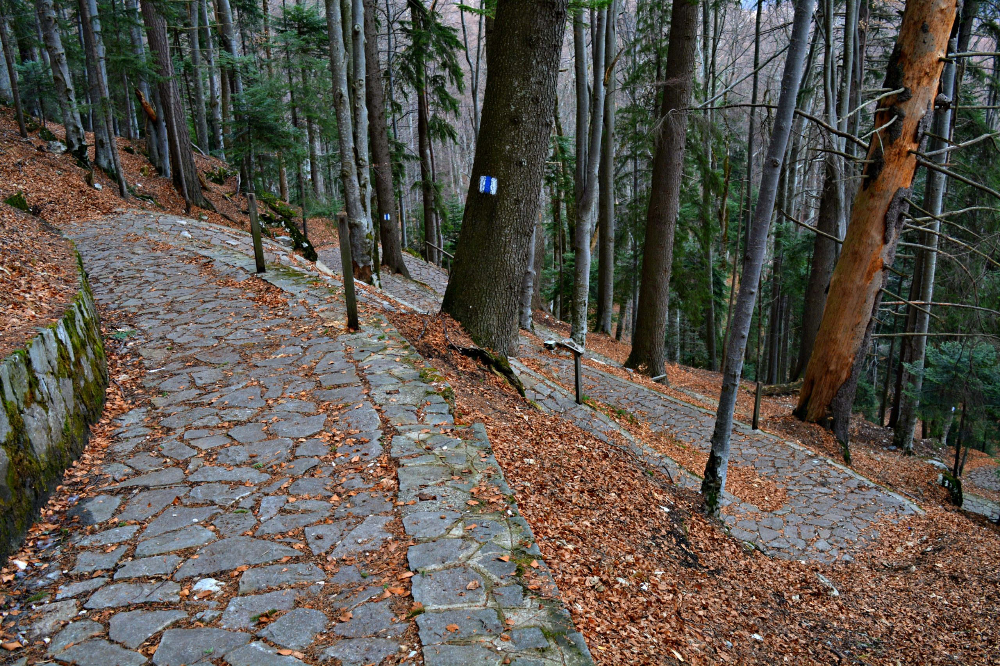

Like Erol Ozan said Some beautiful paths can’t be discovered without getting lost
,so, let's take a look at their opinions about the city.
- The blogger from wanderful-world said:
- I forgot to pack my map for the day so we arrived at Sinaia station not really knowing where we were supposed to be going. Luckily, there are not many options, so we took the steps straight ahead out of the station that everyone else seemed to be taking. Let me tell you this: Romanians like their steps steep. And they like a lot of them, all in one place. By the time you’ve even reached the first level – a little park complete with fountain and café – you will be sweaty and gasping for breath. Or maybe that was just me. I recommend getting a coffee and a bite to eat at this point to refuel.

- If you decide to walk up to Peles Castle, which many people do and I recommend, you can cut through the park to visit the monastery on the way. I didn’t go into the monastery, partly because there were so many coaches unloading around it, and partly because I was too eager to get to Peles, so I continued up the windy, steep little road to the Peles Castle car park. If you think you’ve reached it at that point, you’re wrong. Instead, there is a footpath leading through the forest which, in any other place would be beautiful and quiet. Instead, it was full of hordes of children, big groups of people taking up the whole path, and locals taking advantage of the high footfall by selling a large amount of mostly useless items Anyway, the nearer you get the busier it gets. Peles Castle, though, is beautiful, sitting majestically on top of the hill. I almost felt sorry for it looking sadly down upon the raucous mess below, wondering how it had ever got to this stage..
- An anonymus person said:
- Tour gorgeous royal residences, museums in preserved houses and rugged mountain paths at this charming town, built around a monastery. Experience scintillating Sinai, a small town surrounded by enchanting natural scenery that has prompted hikers, skiers, artisans and even Romanian royalty to live here. This mountain resort charms with its preserved history, gorgeous buildings, old-world customs and adventure opportunities. The town of Sinaia began with the construction of the Sinaia Monastery in 1695. The name of the church, and subsequently the town, refers to Mount Sinai, a sacred biblical site. Take a tour of the monastery to see monks painting, meditating and strolling around gardens. Admire the monastery’s architecture, which combines Byzantine-era spires with horizontal brickwork that is typical of Romanian churches.
- Tour the exquisite Peles Castle, a 20th-century palace built for King Carol I. Admire the Renaissance-style façades, browse an armory of 1,600 ancient weapons and note the attention to detail in themed rooms dedicated to cultures around the world. Next door, photograph the exquisite fachwerk, or timber framing, of the Pelisor Castle. Take another walk through history at the George Enescu Memorial House, a museum dedicated to one of Romania’s most famous musicians. Explore the house’s modest chambers to see belongings and instruments of George Enescu, the 19th-century composer. Stroll along Carol I Boulevard, the city’s main thoroughfare, to find upmarket cafés, restaurants and shopping options. As evening falls, head to Sinaia Casino to enjoy a world-class meal, see the work of local artists on display or try your luck at the gaming tables.
 
<----------- Memorial House of George Enescu
Royal Path ---------------------------->